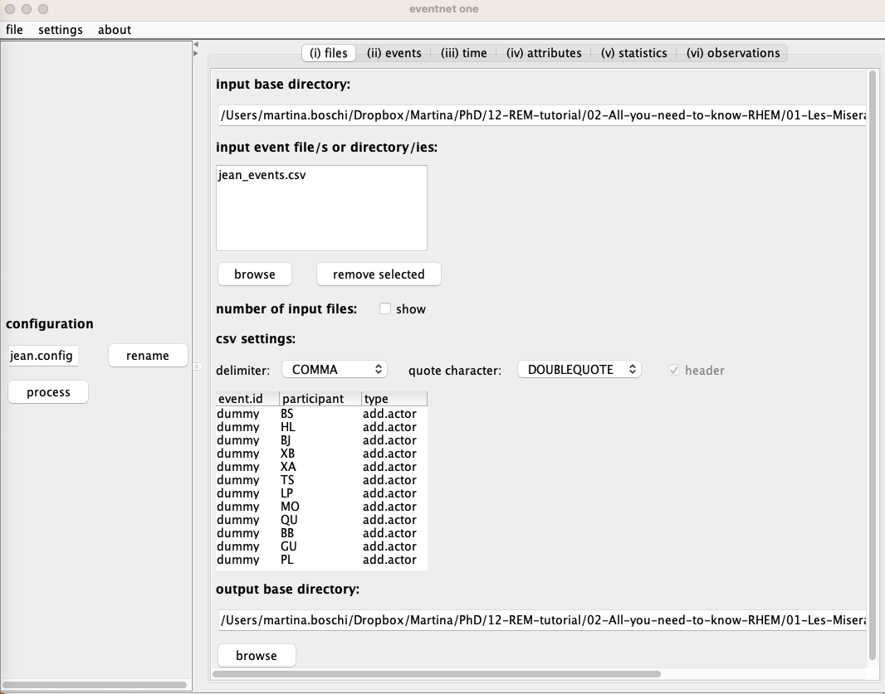
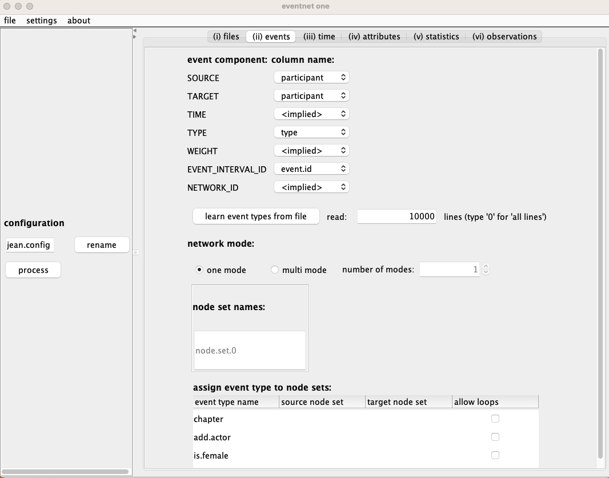
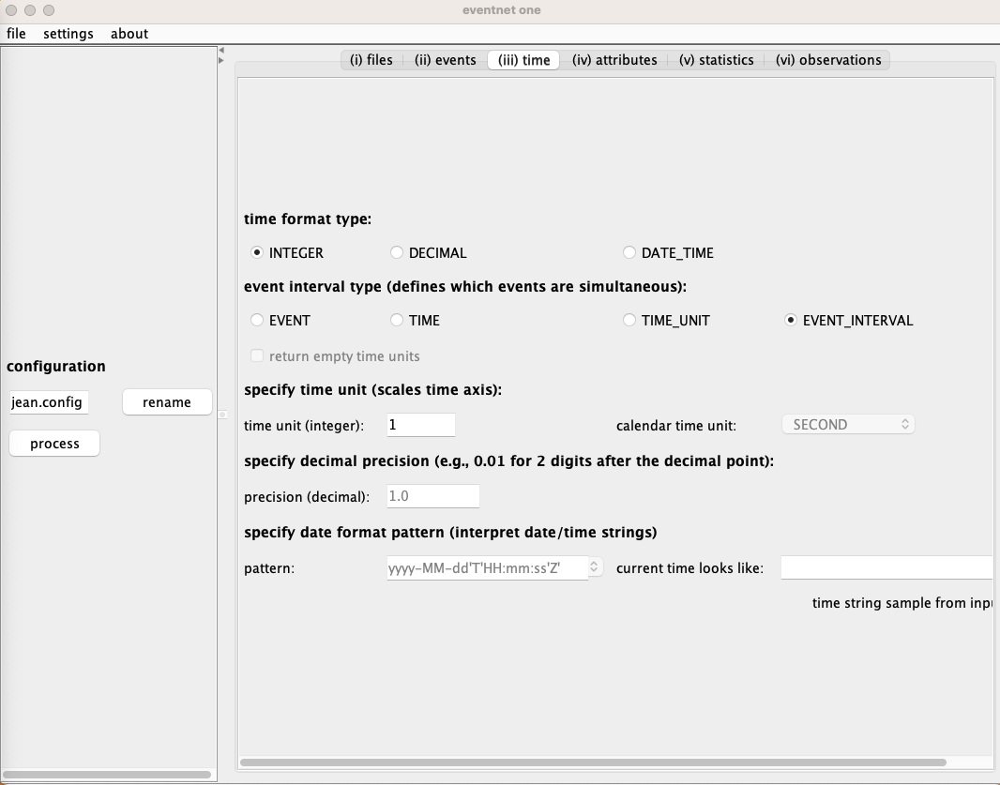
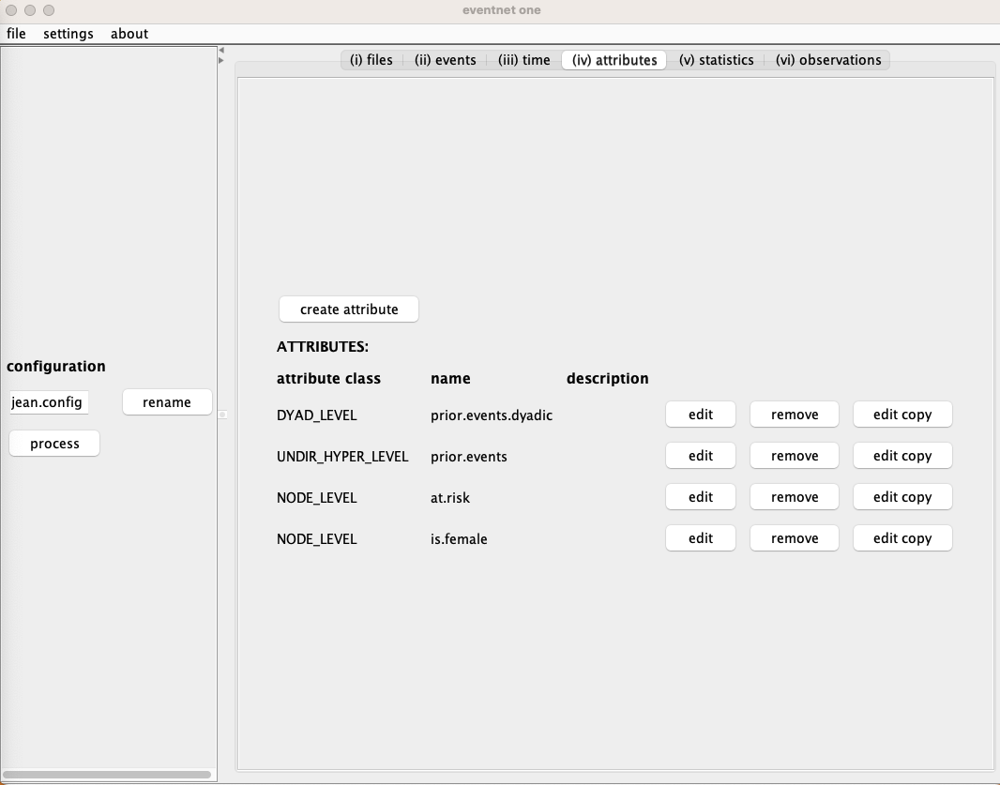
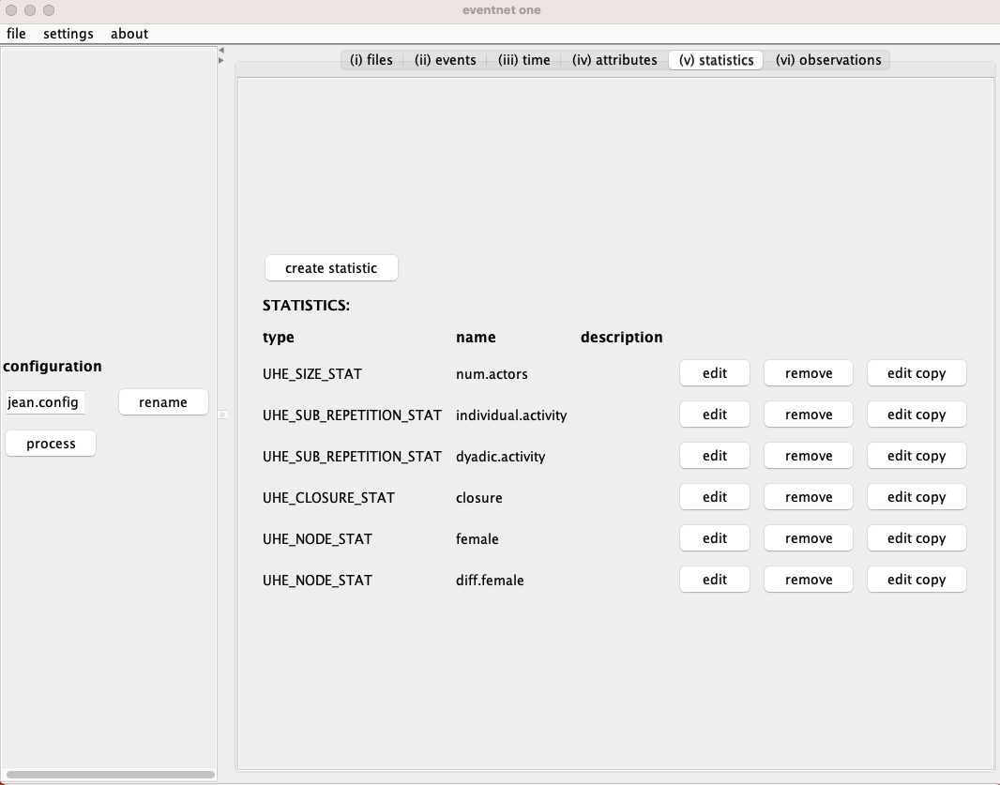
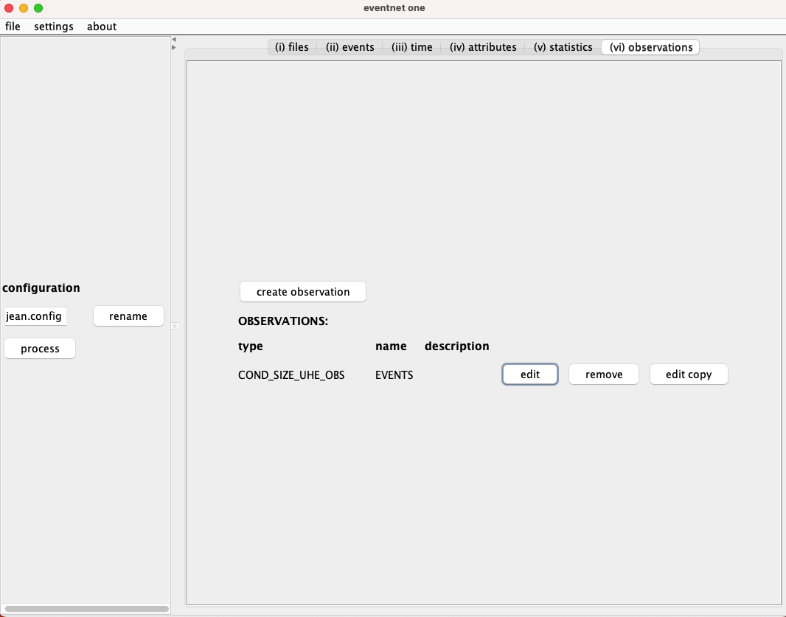

Practical 1: Les Misérables
The practical sessions of this workshop focus on fitting relational hyper event models using the amorem package. If you would like to replicate the code locally, feel free to download the files in the box below:
- Les-Miserables.R — R script
- Les-Miserables.Rmd — R Markdown source
Introduction and Set up
In the two practicals of the workshop All You Need to Know About
Relational Hyper-Event Modeling, we show how to use amorem to fit
relational hyper-event models with increasing levels of complexity.
If you are running this tutorial locally, make sure to uncomment the
remotes::install_github command below before installing the package.
# remotes::install_github("franciscorichter/amorem")
library(amorem)
This practical also requires the dplyr library. If you do not have it
installed, uncomment the install.packages("dplyr") line below.
# install.packages("dplyr")
library(dplyr)
This practical is inspired by the analysis conducted in (Lerner et al., 2025), where, for illustrative purposes, RHEM is applied to the network of actor co-appearances in Les Misérables, compiled by Donald Knuth (Knuth, 1993).
The data comprises 80 actors (co-)appearing in one or several of 288
chapters. The (binary\footnote{only for mathematical purposes}{=tex})
gender of the actors is known.
1. Data import and Covariate computation in eventnet
data_original <- read.csv("00-eventnet/jean_events.csv")
head(data_original)
## event.id participant type
## 1 dummy BS add.actor
## 2 dummy HL add.actor
## 3 dummy BJ add.actor
## 4 dummy XB add.actor
## 5 dummy XA add.actor
## 6 dummy TS add.actor
Inspecting the data, we can interpret it as a relational hyper-event network:
- The network consists of 80 actors ($|V| = 80$) co-appearing in one or several of 288 chapters ($n = 288$);
- $e_i = (S_i, t_i)$ is a hyperevent (a chapter) involving a set of co-appearing actors (i.e. the senders of the event) $S_i$, where $t_i$ is simply a counter for the chapter;
- $\text{female}(i)$ is a binary gender attribute for each actor.
The file jean_events.csv contains three types of entries (which can be
distinguished using the column type), namely add.actor, is.female,
and chapter. Each entry involves only one actor at a time. A chapter
is therefore represented by as many rows as the number of actors
involved.
table(data_original$TYPE)
## < table of extent 0 >
To show how to analyze the data in eventnet, we refer explicitly to
the tutorials Basic
tutorial
and RHEM first
steps.
You can find the configuration file jean.config.small.txt in the
materials above, which can be directly uploaded into eventnet. The
configuration file tells the software how the input data should be
interpreted and processed. Once you have uploaded the file in
eventnet, you can explore the different windows:
- (i) files: allows you to specify one or more input files, define
the corresponding CSV settings (e.g., delimiter, quote character,
header, etc.), and set an output directory. In the given example,
there are three columns named
event.id,participant, andtype.

-
(ii) events: allows you to map different components of an event to columns of the input file and define whether the event network is one-mode or multi-mode.
SOURCE: identifies who initiates the event;TARGET: identifies who receives the event. Undirected hyperevents should mapSOURCEandTARGETto the same column indicating the participants;TIME: the time of the event. Time can be expressed in several ways, including integers, decimal numbers, or date–time strings. Additional information must be specified in the Time tab. If time is implied, events are implicitly numbered 1, 2, 3, …, and these numbers are taken as the event time;TYPE: information about what the source does to the target. If the type is implied, it is implicitly set toEVENT;WEIGHT: specifies the strength, magnitude, or intensity of the event. If weight is implied, it is implicitly set to one;EVENT_INTERVAL_ID: marks sub-sequences of simultaneous events. It must necessarily be mapped to a column in the input file;NETWORK_ID: marks sub-sequences that occur within the same event network.
In the network mode section, you can specify whether the network is
one- or multi-mode. In our case, the network is one-mode and includes
actors only. Once the column for TYPE has been set, you can click on
the button learn event types from file. It is then possible to view
the different event types in the section
assign event type to node sets. The Events tab for this application is
shown below.

- (iii) time: in this window, we focus our attention on the
event interval typesection, which defines which events are considered simultaneous. Several options are available: each event can be treated as occurring alone (EVENT); events with the same time value can be considered simultaneous (TIME); events occurring within the same time unit can be treated as simultaneous; and finally, our case: events that are assigned the same event interval ID are considered simultaneous (EVENT_INTERVAL). Whenever richer information about time is available, it is possible to specify the format and the decimal precision. The Time tab for this application is shown in Figure 3.

-
(iv) attributes: Attributes include information about past events and assign values to nodes, to the entire network, or to hyperedges of any size. In this example, we define two
NODE_LEVEL, oneDYAD_LEVEL, and oneUNDIR_HYPER_LEVELattribute. The values of attributes generally change over time. Attributes are then used to define explanatory variables (statistics).-
NODE_LEVEL:-
at.risk: a function of events of type
add_actor. The type isDEFAULT_NODE_LEVEL_ATTRIBUTE. The update type isSET_VALUE_TO, meaning that the values of this attribute are set to (rather than incremented by) the values of the events specified in theupdates by eventssection at the bottom. The direction set toOUTmeans that the source node of the event has its value updated. In this case, usingINwould lead to the same result. -
is.female: defined in the same way as at.risk.
-
-
UNDIR_HYPER_LEVEL:- prior.events: a function of events of type
chapter. The type isDEFAULT_UHE_ATTRIBUTE. For each hyperevent and time-point, the attribute counts the number of past events and whose set of participants are exactly the members of the hyperevent. The update type isINCREMENT_VALUE_BY, meaning that the values of the events specified in theupdates by eventsget added to the current attribute value on the same hyperedge.
- prior.events: a function of events of type
-
DYAD_LEVEL:- prior.events.dyadics: a function of events of type
chapter. This allows to compute, for each pair of actors, the number of previous events in which both jointly participated. The type isDYAD_LEVEL_ATTRIBUTE_FROM_UHE.
- prior.events.dyadics: a function of events of type
-
The Attributes tab for this application is shown below.

- (v) statistics: Hyperedge statistics are computed by aggregating attributes and, therefore, might be functions of previous history of events. The values of hyperedge statistics are computed for all observed hyperevents and for all, or a subset of, non-events. Even though the configuration file includes information about closure, we focus on five statistics in this tutorial:
- num.actors: a statistic of type
UHE_SIZE_STAT. It computes the size of the hyperevent and requires no additional settings. - individual.activity and dyadic.activity: both are of type
UHE_SUB_REPETITION_STAT. According to the discussion on subset repetition, these statistics rely on the attributeprior_events. The individual and dyadic versions differ in the hyperedge size, which is equal to 1 and 2, respectively. At the bottom, one can specify how to aggregate the values over the different participant subsets; in this case, they are summed (SUM). - female and diff.female: both are of type
UHE_NODE_STAT. They are computed from the attributeis.femaleand aggregated by summing (SUM) to evaluate the main effect, and bySUMABSDIFFto evaluate homophily.

- (vi) observations: this tab allows you to specify which
hyperevents are considered and which ones, and how many, can be
sampled as non-events. In the uploaded configuration, the
observation is named
EVENTS_CONDITIONAL_SIZEand has typeCOND_SIZE_UHE_OBS. It considers only events of typeevent(and not the other event typeadd_actor) and - importantly - has the optionapply case-control samplingchecked. The observation compares each observed hyperevent with all hyperevents of the same size. The Observations tab is reported in Figure 6.

2. Importing data after pre-processing in eventnet
We load the data after pre-processing in eventnet.
data_preproc <- read.csv("01-Data/jean_events_EVENTS.csv")
head(data_preproc)
## IS_OBSERVED SOURCE TARGET TYPE EVENT_INTERVAL_ID EVENT INTEGER_TIME
## 1 1 |MY|NP|MB| NA chapter 1.1.1 109 108
## 2 0 |CL|GR|MT| NA 111 110
## 3 0 |MA|BB|CV| NA 111 110
## 4 0 |PG|GT|CM| NA 111 110
## 5 0 |TH|MM|HL| NA 111 110
## 6 0 |TH|LL|SS| NA 111 110
## TIME_POINT TIME_UNIT EVENT_INTERVAL num.actors individual.activity
## 1 109 108 2 3 0
## 2 111 110 2 3 0
## 3 111 110 2 3 0
## 4 111 110 2 3 0
## 5 111 110 2 3 0
## 6 111 110 2 3 0
## dyadic.activity closure female diff.female
## 1 0 0 1 2
## 2 0 0 2 2
## 3 0 0 0 0
## 4 0 0 0 0
## 5 0 0 1 2
## 6 0 0 2 2
Upon inspecting the dataset, you may notice the presence of missing
values (NA) in some columns. In particular, the TARGET column
contains only missing values, while the SOURCE column includes
multiple entries. This indicates that we are dealing with undirected
relational hyper-events, where the sender set is a subset of the
vertices in a relational hypergraph $V$, and the receiver set is empty.
Additionally, the EVENT_INTERVAL_ID column does not hold interpretable
values, as in this application we only know the order of events. The
IS_OBSERVED column distinguishes between actual observed events and
non-events (i.e., events that could have occurred but did not).
The num.actors column is also unnecessary in this application, since
non-events have been sampled to match the cardinality of the observed
events, meaning that the effect of event size cannot be meaningfully
estimated.
To simplify the analysis, we remove all unnecessary columns from the dataset.
raw_data_m20 <- data_preproc[,setdiff(colnames(data_preproc),
c("TARGET", "TYPE", "EVENT_INTERVAL_ID", "EVENT",
"INTEGER_TIME", "TIME_POINT",
"TIME_UNIT", "num.actors"))]
rm(data_preproc)
head(raw_data_m20)
## IS_OBSERVED SOURCE EVENT_INTERVAL individual.activity dyadic.activity
## 1 1 |MY|NP|MB| 2 0 0
## 2 0 |CL|GR|MT| 2 0 0
## 3 0 |MA|BB|CV| 2 0 0
## 4 0 |PG|GT|CM| 2 0 0
## 5 0 |TH|MM|HL| 2 0 0
## 6 0 |TH|LL|SS| 2 0 0
## closure female diff.female
## 1 0 1 2
## 2 0 2 2
## 3 0 0 0
## 4 0 0 0
## 5 0 1 2
## 6 0 2 2
The object raw_data_m20 is in long format with 20 non-events per
event.
We further construct the case-1-control dataset in wide format. To
do so, we first create two separate objects for events and non-events,
respectively. We then merge these datasets using the set of variables
that identify which event each non-event refers to. Among the non-events
satisfying this condition, we sample only one. Once the sampled
non-event is stored alongside its corresponding event, we use the
widen_case_control function to create the desired structure.
data_ev <- raw_data_m20 %>% filter(IS_OBSERVED == 1)
data_nv <- raw_data_m20 %>% filter(IS_OBSERVED == 0)
set.seed(1234)
merge_id_cols <- c("EVENT_INTERVAL")
# For each group defined by the merge_id_cols, take one random non-event
data_nv_sampled <- data_nv %>%
group_by(across(all_of(merge_id_cols))) %>%
slice_sample(n = 1) %>%
ungroup()
raw_data_m1 <- bind_rows(data_ev, data_nv_sampled) %>%
arrange(EVENT_INTERVAL)
The function widen_case_control transforms data from long format to
wide format. To do so, we need to specify the event argument - the
dummy variable that distinguishes events from non-events - and the
stratum argument, namely the variable that identifies which non-event
is associated with each event.
ncc_data <- widen_case_control(raw_data_m1,
case = "IS_OBSERVED",
stratum = "EVENT_INTERVAL")
2. Model fitting
Based on the data structures constructed above, we can apply two different inference methods.
2.1. Sampled partial likelihood via Conditional logistic regression
Since we do not have access to timing information for the events and we have a case-control sample with 20 non-events, we fit a conditional logistic regression.
fit_clogit <- rem(IS_OBSERVED ~ diff.female
+ female + individual.activity
+ dyadic.activity,
method = "clogit",
data = raw_data_m20,
stratum = "EVENT_INTERVAL")
summary(fit_clogit)
## Call:
## coxph(formula = Surv(rep(1, 6048L), .case) ~ diff.female + female +
## individual.activity + dyadic.activity + strata(.strat), data = cl,
## method = "exact")
##
## n= 6048, number of events= 288
##
## coef exp(coef) se(coef) z Pr(>|z|)
## diff.female -0.290310 0.748032 0.117345 -2.474 0.0134 *
## female -0.293382 0.745737 0.144822 -2.026 0.0428 *
## individual.activity 0.042973 1.043909 0.003918 10.967 <2e-16 ***
## dyadic.activity 0.460395 1.584701 0.049289 9.341 <2e-16 ***
## ---
## Signif. codes: 0 '***' 0.001 '**' 0.01 '*' 0.05 '.' 0.1 ' ' 1
##
## exp(coef) exp(-coef) lower .95 upper .95
## diff.female 0.7480 1.3368 0.5943 0.9415
## female 0.7457 1.3410 0.5615 0.9905
## individual.activity 1.0439 0.9579 1.0359 1.0520
## dyadic.activity 1.5847 0.6310 1.4388 1.7454
##
## Concordance= 0.896 (se = 0.013 )
## Likelihood ratio test= 819.9 on 4 df, p=<2e-16
## Wald test = 245.8 on 4 df, p=<2e-16
## Score (logrank) test = 1418 on 4 df, p=<2e-16
Interpretation: We find a positive effect of individual and dyadic
activity. This suggests that prior (co-)presence in previous chapters
— whether alone or in pairs — increases the rate of participating in
events. The negative effect of diff.female indicates a positive gender
homophily effect, favouring co-appearance with actors of the same
gender.
2.2. Case-1-control partial likelihood via Degenerate logistic regression
When considering only one non-event per event ([Theoretical reference]), it can be shown that the partial likelihood coincides with that of a degenerate logistic regression:
- without an intercept term,
- with a constant response equal to 1,
- with covariates equal to the difference between the covariates of the event and those of the sampled non-event.
This formulation allows the framework to be extended to additive
effects, which is why the method here is gam.
fit_glm <- rem(~ d_diff.female + d_female
+ d_individual.activity
+ d_dyadic.activity
- 1, data = ncc_data,
method="gam")
summary(fit_glm)
##
## Family: binomial
## Link function: logit
##
## Formula:
## one ~ -1 + d_diff.female + d_female + d_individual.activity +
## d_dyadic.activity
##
## Parametric coefficients:
## Estimate Std. Error z value Pr(>|z|)
## d_diff.female -0.67999 0.37967 -1.791 0.073289 .
## d_female -0.71924 0.31533 -2.281 0.022555 *
## d_individual.activity 0.07649 0.01704 4.490 7.13e-06 ***
## d_dyadic.activity 1.81184 0.54199 3.343 0.000829 ***
## ---
## Signif. codes: 0 '***' 0.001 '**' 0.01 '*' 0.05 '.' 0.1 ' ' 1
##
##
## R-sq.(adj) = -Inf Deviance explained = -Inf%
## UBRE = -0.54948 Scale est. = 1 n = 288
As before, we find a positive effect of individual and dyadic activity, a negative main effect for female gender, and a positive effect for gender homophily.
References
-
Knuth, D. E. (1993). The Stanford GraphBase: a platform for combinatorial computing (Vol. 1). New York: AcM Press.
-
Lerner, J., Hâncean, M. G., & Perc, M. (2025). Modeling temporal hypergraphs. Journal of Complex Networks, 13(6).
-
Lerner, J., & Lomi, A. (2020). Reliability of relational event model estimates under sampling: How to fit a relational event model to 360 million dyadic events. Network Science, 8(1), 97-135.
-
Lerner, J., & Lomi, A. (2023). Relational hyperevent models for polyadic interaction networks. Journal of the Royal Statistical Society Series A: Statistics in Society, 186(3), 577-600.